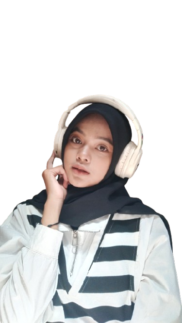

Tentang Amelia Andini
Hai, saya Amelia Andini, seorang mahasiswa Informatika di Universitas Siliwangi. Saya memiliki ketertarikan dalam dunia teknologi, desain, dan penulisan. Di blog ini, saya berbagi informasi dan wawasan seputar UI/UX design, web development, serta berbagai topik teknologi lainnya.
Selain belajar dan berkarya, saya juga suka menulis puisi dan bernyanyi. Tujuan saya adalah untuk menginspirasi orang lain melalui tulisan dan berbagi pengalaman saya dalam dunia digital.